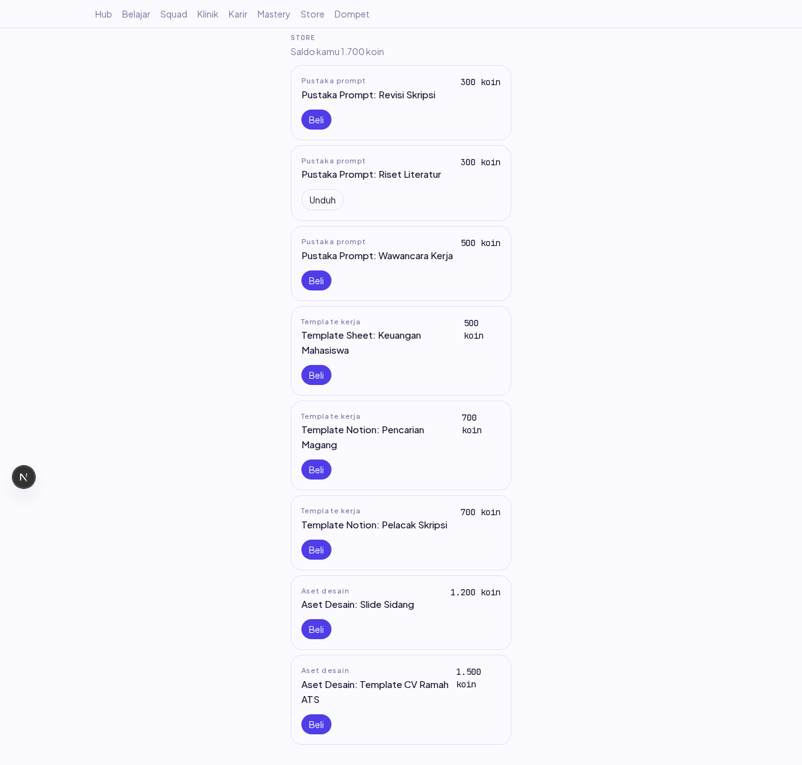
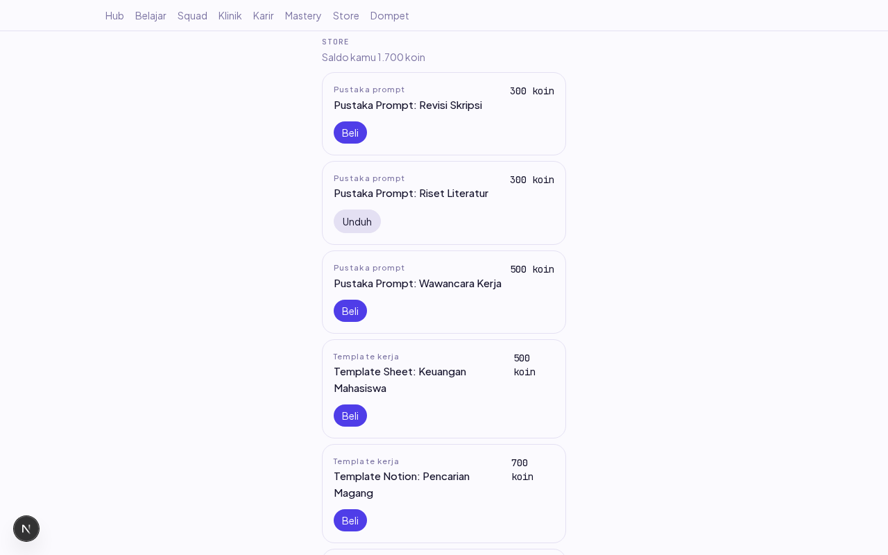
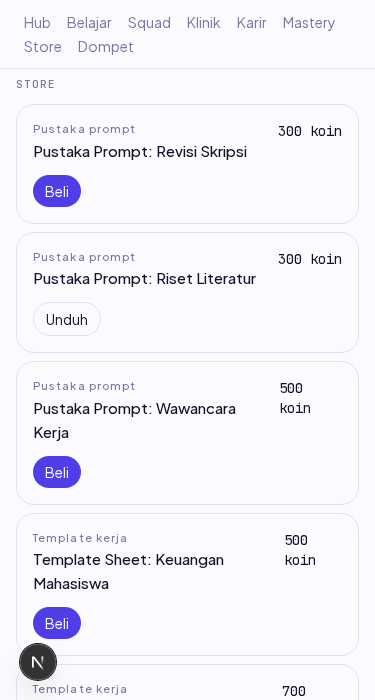

Laporan verifikasi end-to-end item ST-02 (Dev B). Dikerjakan 18 Okt 2026 (sesi susulan minggu 12–16 Okt).
Layar /store menggantikan stub: etalase 8 item dari GET /store/items (kini membawa owned + purchase_id), tombol Beli memanggil POST /store/purchase (⚡ kunci idempoten per percobaan), dan tombol Unduh memanggil rute BARU GET /store/purchases/:id/download yang menandatangani URL objek MinIO berumur 15 menit. asset_key tidak pernah keluar dari service (SR-5).
| # | Skenario | Harapan | Hasil | Cara verifikasi |
|---|---|---|---|---|
| 1 | Objek aset diunggah ke MinIO strive-assets | Aset nyata tersedia | OK | PutObject via SDK |
| 2 | Buka /store | 8 item dari API nyata | LULUS | assert jumlah kartu |
| 3 | Beli item 300 koin | Tombol berubah jadi Unduh; saldo tampil 1.700 — KATA SERVER (res.balance), bukan 2000−300 klien | LULUS | Screenshot 01 |
| 4 | SR-5: klik Unduh | Signed URL X-Amz-Expires=900; URL tersebut benar-benar MENGUNDUH dari MinIO: HTTP 200 + isi aset persis | LULUS | fetch URL bertanda dari Node |
| 5 | SR-5: tebak URL tanpa tanda tangan | 403 dari MinIO — yang belum membayar tidak bisa menebak | LULUS | fetch URL polos |
| 6 | SR-6: item nonaktif tetap bisa diunduh pembelinya | URL tetap diterbitkan (tanpa filter is_active) | LULUS | integrasi DB nyata 5/5 |
| 7 | IDOR unduhan | Pembelian orang lain / id asing → NOT_FOUND seragam (kepemilikan di WHERE, pola F-14) | LULUS | integrasi DB nyata |
| 8 | ALREADY_PURCHASED (balapan kalah) | Etalase menyinkronkan owned (tombol jadi Unduh), bukan menyalahkan pengguna | LULUS | unit test mesin |
| 9 | 375px + console | Tanpa scroll horizontal; console bersih | LULUS | Screenshot 03 |

01 — Item pertama sudah dimiliki (tombol Unduh), saldo 1.700 kata server.

02 — Unduh membuka URL bertanda tangan berumur 900 detik.

03 — 375px tanpa scroll horizontal.
expires_at respons dihitung dari SIGNED_URL_TTL_SECONDS — KONSTANTA YANG SAMA dengan yang dipakai menandatangani; dua angka yang harus sinkron tidak ditulis dua kali.purchase_id (nullable) karena §10.3 tidak punya rute "daftar pembelian" — unduhan menunjuk BARIS pembelian, dan etalase adalah satu-satunya pembawa id itu. Kontrak berubah aditif.| Perintah | Hasil |
|---|---|
pnpm --filter @strive/api test:integration store | 18/18 (5 baru: download) |
pnpm --filter @strive/web test | 85/85 (7 baru: mesin etalase) |
pnpm lint && pnpm typecheck | hijau |
| Audit keamanan (agent-security) | terlampir di PR |